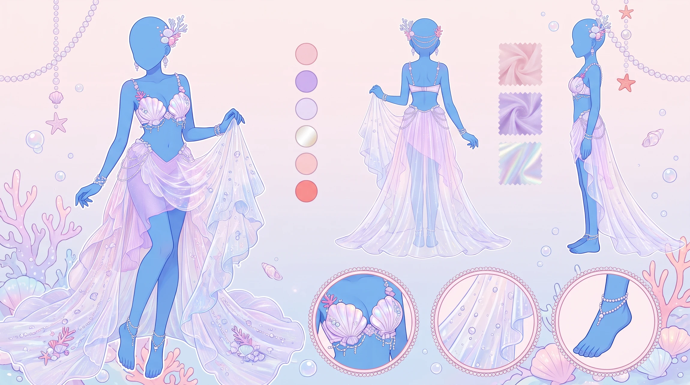
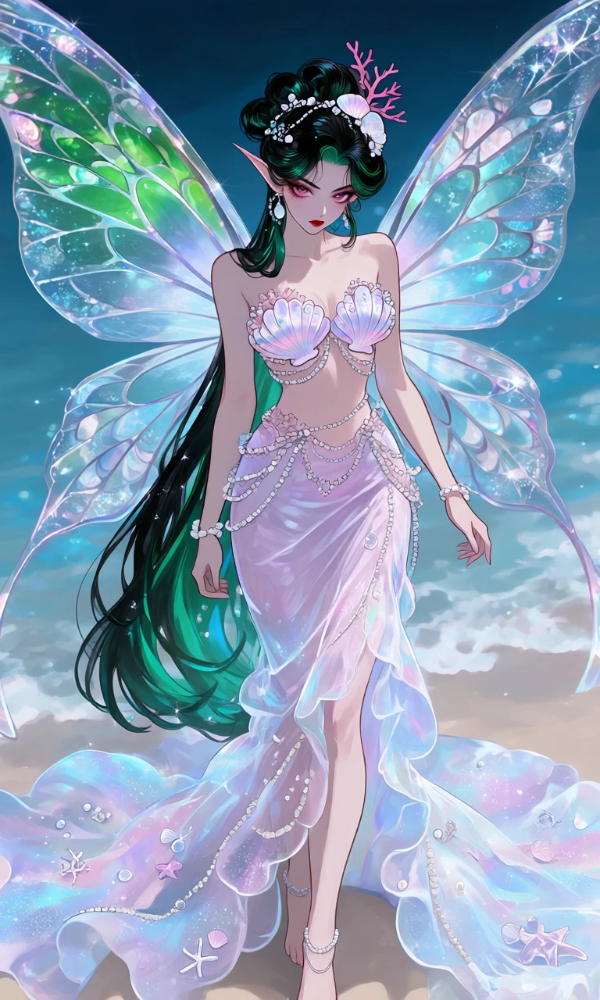
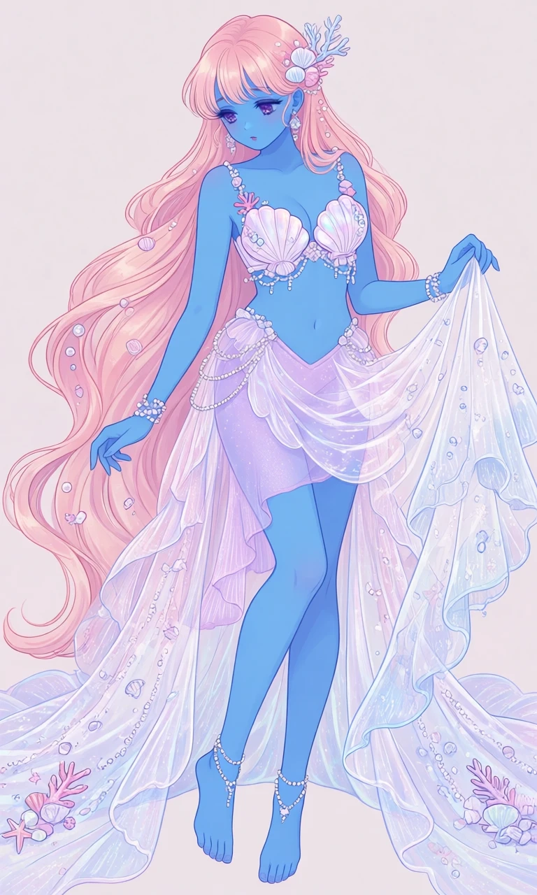

Opal Shoal

Outfit Prompt
Elegant ocean-inspired fantasy party outfit, ethereal fashion, pale pink, soft lavender, pearlescent white, iridescent pastel blue, and delicate silver color palette.
A decorative seashell bra made from overlapping pearlescent shells in pale pink, lavender, and shimmering white. The shells are adorned with tiny white pearls, dangling pearl strands, translucent beads, and delicate pink and lavender coral pieces.
The fitted seashell top leaves the stomach and midriff exposed.
A short, opaque soft lavender-pink underskirt provides full coverage around the hips and upper thighs.
Over the underskirt is a long, mostly transparent flowing skirt made from multiple layers of sparkling sheer fabric in pale pink, lavender, pearlescent white, and translucent blue.
The sheer layers extend nearly to the floor, floating loosely like jellyfish fins, sea foam, and flowing water.
The transparent overskirt features an iridescent wet-looking shimmer, with tiny pearls, seashell fragments, delicate coral branches, starfish ornaments, and translucent beads decorating the fabric.
Long, flowing sheer panels trail behind the skirt, resembling the movement of a mermaid tail without forming an actual tail.
Multiple delicate pearl strands drape around the waist and hips.
Pearl bracelets, dangling pearl-and-seashell earrings, and delicate shell-and-coral jewelry.
An ocean-inspired hair ornament made from tiny pearls, iridescent shells, and branching pink coral, accompanied by small pearl hair decorations.
Bare feet decorated with delicate pearl anklets and simple pearl-and-silver foot chains. No shoes.
Ethereal underwater fantasy fashion, natural ocean treasures, shimmering transparent fabrics, elegant seashell accessories, delicate pearl decorations, and graceful styling.
Outfit Examples



